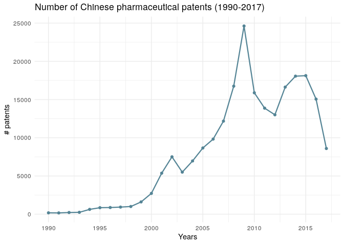

The dataset is about innovation dynamics in the pharmaceutical industry in China. Innovation dynamics is interpreted as knowledge transfer across technologies and through time (velocity). The dataset provides access to 143,916 Jaccard similarity indices. They proxy relatedness across technologies (classes) and through time (velocity). They are the result of a Natural Language Processing treatment of 69,923 patents in the pharmaceutical industry in China from 1990 to 2017.
The Jaccard similarity indices computed in this dataset allow us to map patents’ relatedness in the Chinese pharmaceutical industry. The Jaccard similarity provides a cross-section relatedness and longitudinal cartography.
Researchers can benefit from these data to capture the actual dynamics of innovation, with a particular interest in knowledge creation and relatedness in China’s pharmaceutical industry. The data can also benefit policymakers and firms for the same reason.
Researchers in innovation can use the similarity indices as either a feature or a target variable in their models. As a feature variable, the similarity indices can help describe the success of some public policies, firms, or innovation ecosystems. As a target variable, they may help find the source of innovation dynamics in the Chinese pharmaceutical industry.
| Variable name | Description |
|---|---|
| name_i | Corresponds to class_i + year_i containing all patents of this group and year in the dataset |
| class_i | Manual code section for patent group i |
| year_i | Year of patent filing |
| vol_i | Number of patents in the group (name_i) |
| name_j | Corresponds to class_j + year_j containing all patents of this group and year in the dataset |
| class_j | Manual code section for patent group j |
| year_j | Year of patent filing for group j |
| vol_j | Number of patents in the group (name_j) |
| year_diff | The difference in years between year_i and year_j of patent filing |
| vol_diff | Difference in the amount of patents filed in each class for a respective year (difference vol_i and vol_j) |
| Jaccard_Similarity | Similarity between patent class i and patent class j and their respective years |
| Manual code sections | Category | Sub-category |
|---|---|---|
| B14-N | Pharmaceutical activities | Organs |
| D05-H | Fermentation industry | Microbiology, laboratory procedures |
| B04-A | Natural products (or genetically engineered), polymers | Alkaloids, plant extracts |
| B14-S | Pharmaceutical activities | Miscellaneous activity terms |
| B14-F | Pharmaceutical activities | Drugs acting on the blood and cardiovascular system |
| B04-C | Natural products (or genetically engineered), polymers | Polymers |
| B14-C | Pharmaceutical activities | Anaesthetics and drugs relieving fever, inflammation and pain |
| B04-E | Natural products (or genetically engineered), polymers | Nucleic acids |
| B12-M | Diagnostics and formulation types | Formulations type |
| B14-J | Pharmaceutical activities | Drugs acting on the muscular and nervous systems |
| B14-H | Pharmaceutical activities | Cancer related drugs |
| B11-C | Process, apparatus | General process, apparatus |
| B14-A | Pharmaceutical activities | Antimicobials |
| B14-E | Pharmaceutical activities | Drugs acting on the gastrointestinal system |
| B10-A | Aromatics and cycloaliphatics (mono and bicyclic only), aliphatics | Rarer chemical groups general |
| B14-G | Pharmaceutical activities | Drugs acting on the immune system |
| B14-D | Pharmaceutical activities | Hormonal, antihormonal, enzyme inhibitors |
| A12-V | Polymer applications | Medical, dental, cosmetics and veterinary |
| B07-D | Heterocyclics, mononuclear | Sole hetero(s) nitrogen |
| B06-D | Heterocyclic fused ring | Sole hetero(s) nitrogen |
Option 1. You can install ipcR from GitHub with:
# install.packages("devtools")
devtools::install_github("warint/innovation_pharma_china")Option 2. You can also download the data here
myData <- ipcr_data()The ipcr_visual() function allows you to create three types of visual : line, point and box charts.
ipcr_visual(chart = "line_1")
ipcr_visual(chart = "line_2",class = "a12v")Warin, Thierry, and C. Vorreuther. 2020. “Patent Relatedness and Velocity in the Chinese Pharmaceutical Industry: A Dataset of Jaccard Similarity Indices”,forthcoming.
The author would like to thank the Center for Interuniversity Research and Analysis of Organizations (CIRANO, Montreal) and the Professorship in Data Science for International Business (HEC Montréal, Canada) for their support, as well as Thibault Senegas, Marine Leroi and Martin Paquette. The usual caveats apply